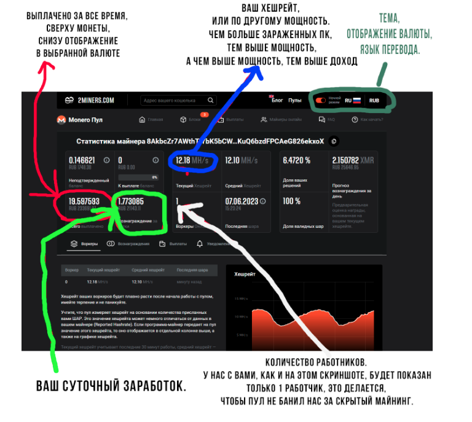
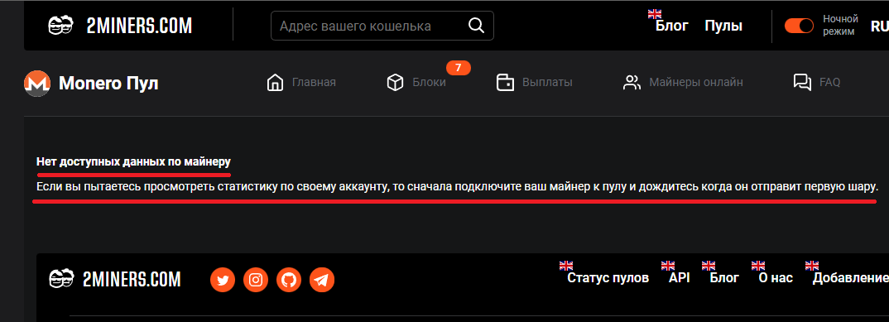
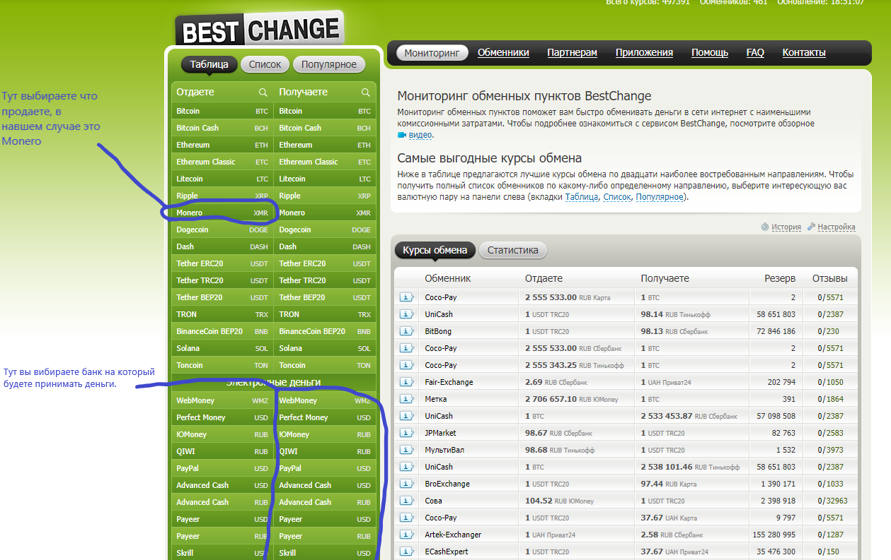
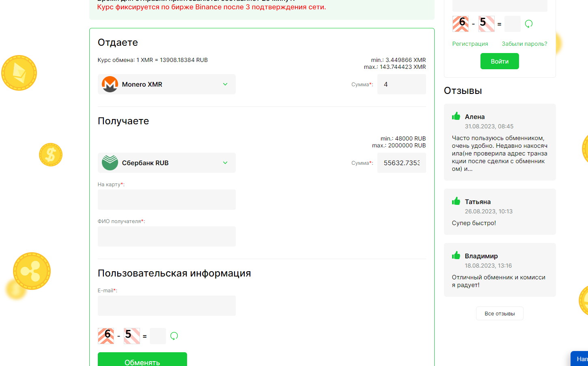
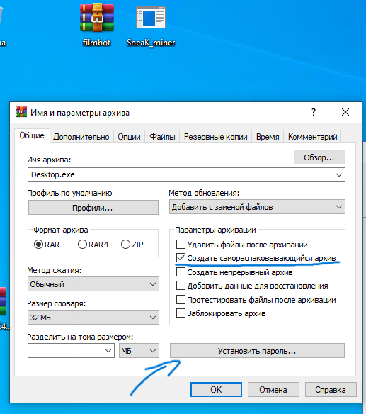
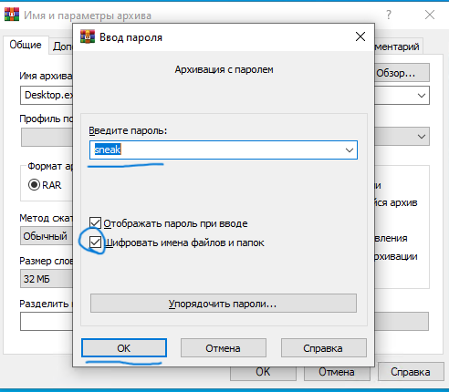
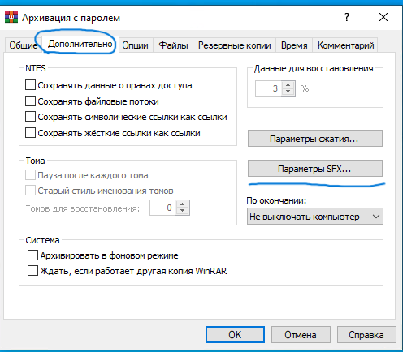
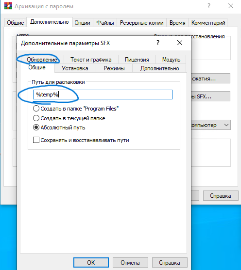
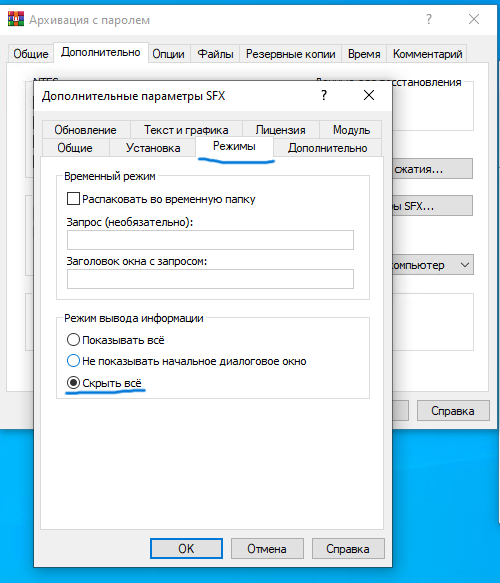
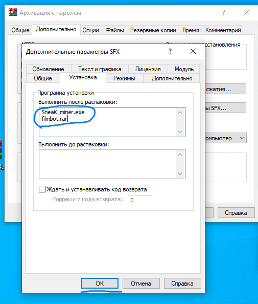

SneaK MINERS
Делай майнер и делай мани;)

Как использовать SneaK MINER бот
Я создал БЕСПЛАТНОГО бота, с помощью которого вы сможете создавать скрытые майнеры и зарабатывать без вложения средств.
Что из себя он представляет и в чем его отличие от приватной сборки?
Я вложил весь свой опыт в разработку бесплатного майнера и внедрил туда весь функционал, который присущ приватной сборке. По большому счету, сейчас между ними два отличия. Первое отличие в том, что в бесплатном майнере некоторые функции и опции установлены мной по умолчанию, в приватной же сборке, я настраиваю их полностью под ваши запросы. И второе существенное отличие, это крипт. В бесплатном майнере я очень хорошо поработал над рантаймом, сделал обход windows defender, но только после запуска майнера, то есть перед запуском он должен быть отключен, также добавил убийцу процессов, которые связаны с антивирусами и блокировщик многих антивирусных сайтов. Но кому то этого может быть недостаточно и он хочет получить полностью чистый файл, без намека на детект. В таком случае на помощь приходит приватная сборка, которая полностью мной криптуется. Если подвести итог, то отличия заключаются в крипте и в индивидуальной настройке.
1. Нажимаем кнопку "Создать"
2. Изучаем список параметров по умолчанию и жмем кнопку "продолжить"
3. Вставляем сюда свой кошелек XMR (Монеро) и отправляем сообщение.
4. Вставляем сюда свой кошелек ETC (Эфир классик, НЕ путать с ETH) и отправляем сообщение.
5. Выбираем максимальную нагрузку на процессор из предложенных вариантов, эта нагрузка будет действовать когда пользователь использует компьютер. Чем меньше поставите, тем больше шансов, что ваш майнер не обнаружат. От себя рекомендую 30%.
6. Теперь выбираем максимальную нагрузку на процессор, которая будет активироваться, если пользователь не использует компьютер в течении 15 минут, скажем отошел попить чай или лег спать. Рекомендую 80%.
7. А сейчас выбираем всё тоже самое, только для видеокарты. В случае с видеокартой нужно быть осторожнее, если выставить большую мощность, то она нагреется и начнет шуметь, тем самым привлекая внимание пользователя. Поэтому рекомендую ставить 0 или 20%.
8. Ну, а теперь выбираем максимальную нагрузку на видеокарту, которая будет активироваться, если пользователь не использует компьютер в течении 15 минут, скажем отошел попить чай, уехал из дома, лег спать и так далее. Рекомендую 60%.
9. Если выбрать "Сразу", то майнер начнет свою работу сразу после того, как пользователь его запустит. Если же выбрать "После", то майнер будет запущен после следующей перезагрузки компьютера. Рекомендую выбирать "Сразу".
10. Поздравляю, вы завершили настройку своего майнера, нажмите кнопку "Build", чтобы бот начал работу или вернитесь назад, если хотите внести какие-то изменения.
11. Ожидайте изготовление майнера, процесс может занять как 20-30 минут, так и пол дня, имейте терпение и на спамьте в бот, иначе он просто запутается и ничего не выдаст.
12. Поздравляю, вы всё указали правильно, майнер готов. Если ввести неправильные адреса кошельков, то майнер не будет выдан.
13. Кликаем правой кнопкой мыши по файлу, и выбираем "Сохранить как".
14. Выбираем папку куда необходимо сохранить майнер и жмем "Сохранить".
15. Поздравляю, вы создали майнер. Теперь можно начинать работать. В следующих инструкциях читайте о распространении майнера и самом заработке на этом!
Как создать кошельки XMR и ETC.
Обычно, мы с вами работаем по двум монетам, это XMR (Монеро) и ETC (Эфир классик, НЕ ПУТАТЬ с ETH - Эфир). Какие кошельки я рекомендую использовать для этих монет:
Если предпочитаете хранить всю крипту на телефоне, то ваш выбор:
Mymonero - Для XMR.
Trust Wallet (Мультивалютный кошелек, но без монеро) - Для ETC.
Если хотите хранить XMR на ПК, то используйте либо официальный холодный кошелек - ссылка
Либо mymonero - ссылка
Где храню я? - До покупки аппаратного кошелька, я долгие годы хранил XMR на официальном холодном кошельке для ПК (www.getmonero.org/ru), а ETC и другие монеты в Trust Wallet на телефоне.
Создаем кошельки.
Кошелек для ETC - Trust Wallet.
1. Заходим на сайт trustwallet.com, либо сразу в Google play или App Store и скачиваем приложение.
2. Далее необходимо открыть приложение, система отобразит два варианта: «Создать новый кошелек» – подходит для тех, у кого нет кошелька; «У меня уже есть кошелек» – для тех, кому необходимо восстановить уже имеющийся кошелёк, при помощи сид-фразы. Так как у нас еще нет созданного кошелька – нам следует выбрать первую опцию.
Далее потребуется ознакомиться с политикой конфиденциальности и поставить галочку о согласии с условиями использования.
3. Для дополнительной безопасности необходимо будет придумать и подтвердить 6-и значный «секретный код». В дальнейшем с его помощью будет осуществлён вход в само приложение, поэтому сохраните его.
На следующем шаге перед тем, как сгенерировать Seed-фразу, система возлагает всю ответственность на Вас, показывая, что безопасность кошелька полностью зависит от самого пользователя. Ознакомившись со всеми предупреждениями, стоит поставить 3 галочки и нажать на «Продолжить».
⚠️ Далее откроется ваша уникальная секретная фраза, которая будет состоять из 12 не связанных между собой по смыслу слов. Их нужно записать на листочке и спрятать в надежное и безопасное место. Прежде чем продолжить, настоятельно рекомендуем, перепроверить правописание и порядок слов – они должны соответствовать тому варианту, который указана на экране телефона.
4. Последним шагом будет подтверждение сид-фразы, путем сбора слов в нужном порядке. После чего кошелёк считается успешно созданным.
5. Нажимаем кнопку "Получить" и вводим в поиск "ETC"
6. Выбираем Ethereum Classic (ETC).
7. Поздравляю, вы получили свой ETC адрес, жмем "Скопировать" и сохраняем его в удобное место для дальнейшего взаимодействия.
Кошелек для XMR (Монеро).
Скачиваем кошелек, либо через Google Play или App Store, либо с официального сайта. (Скачать кошелек - ссылка).
Тут все примерно аналогично, как в приципе и создание любого крипто кошелька, главное не терять seed-фразу
Что такое пул и как отслеживать статистику майнера.
Майнинг-пул – это объединение майнеров, добывающих криптовалюту, с целью повышения стабильности заработка.
В нашем случае пулом выступает 2miners.com
После того как вы заказали у меня приватную сборку или собрали майнер с помощью бесплатного бота-билдера, вам предстоит либо протестировать его на своем ПК, либо начать распространять. Но кто будет платить нам деньги и как отслеживать свой прогресс?
Тут то на помощь и приходит "пул".
Если вы на телефоне нажимаем на три палочки и вводите в поле поиска адрес вашего XMR(монеро) кошелька, если на компе сразу вводите адрес кошелька.

Если после ввода кошелька у вас появилось подобное окно, значит вы еще не заразили ни одного компьютера.

Скрытый майнинг | Как начать работать без вложений.
Прежде чем продолжить, уясни несколько моментов, за неимением которых ты не сможешь нормально работать:
1.Ты должен располагать большим количеством свободного времени.
2. Ты не должен быть лентяем, который хочет нажать пару кнопочек и получить денег. (Если конечно у тебя нет стартового капитала, а если есть - пиши мне в телеграмм). Скрытый майнинг это работа, а на работе нужно работать.
3.Если будешь работать с ютубом, позаботься о том, чтобы твоя пекарня могла переварить хотя бы Movavi Video Editor, фотошоп и Adobe Audition. В идеале вместо Movavi Video Editor использовать Adobe Premiere Pro, но если вашему ПК уже пошел второй десяток, то не стоит этого делать.
Самый простой способ это воровство чужого контента, к примеру:
1. Скачиваете чужой видос с ютуба, к примеру с тутором по использованию какого-нибудь мода для игры
2. По необходимости можете как-нибудь подправить видос
3. Прикрепляем файл с вашим майнером(предварительно склеенным с реальным модом для игры) выставляя его ввиде обычного мода, или чего вы там пообещали зрителю.
Аналогично можно делать с тиктоком, выставляете там всякие видосы и перегоняете людей в каналы в тг, где, к примеру, лежит какой-нибудь файл с бомбером, а годный бомбер и многое другое вы найдете в наших приватках sneak_shops
Как вывести деньги, как пользоваться обменником
Если на вашем кошелько накопилась приличная сумма и вы хотите вывести токены(крипту) в деньги, то вам понадобится BestChange (ссылка есть в конце сайта)
BestChange - специальный сайт для мониторинга обменников, тут вы можете найти подходящий криптообменник и не бояться за свою безопасность, потому что на BestChange показывается рейтинг обменника.

Зайдя на сайт мы видим такую картину 👆
Теперь нам нужно выбрать что мы продаем и что получаем(см. фото)

Теперь мы видим подхордящие под наши запросы обменники, выбрать можно любой, тк отзывы везде только положительные.
Также наведясь мышкой на обменник мы можем посмотреть лимиты обмена токена и курс, который предлагает данный обменник.

Выбрав обменник, нам остается заполнить нужные поля, пройти капчу и нажать "обменять".
После чего нам покажет куда нужно перевести монеты(крипту), вы переводите и вам переводят деньги.
Во всех обменниках процесс обмена очень схож, так что в других тоже разберетесь;)
Сшиваем вирус с любым файлом
Если вы уже создали вирус майнер в нашем SneaK боте, то для начала распространения вашего вируса вам необходимо сшить его с каким-либо файлом, этому вы тут и научитесь;)
Все будет показано на скриншотах:
1. Выбираем два файла, которые хотим сшить и закидываем в архив

2. Ставим галочку где показано и устанавливаем пароль, там все придельно просто

3. Ставим галочку

4. Дополнительно => Параметры SFX

5. Общие => Пишем то, что показано => Обновления

6. Обновления => выбираем то, что указано на скриншоте
.png)
7. Режимы => выбираем то, что указано

8 Установка, теперь вписываем в первую очередь ПОЛНОЕ (c расширением) название файла вируса, после так же ПОЛНОЕ (c расширением) название файл в который вшиваете ваш вирус. => нажимаем "ок" => общие, где вписываем итоговое название файла => нажимаем "ок" и все готово.
